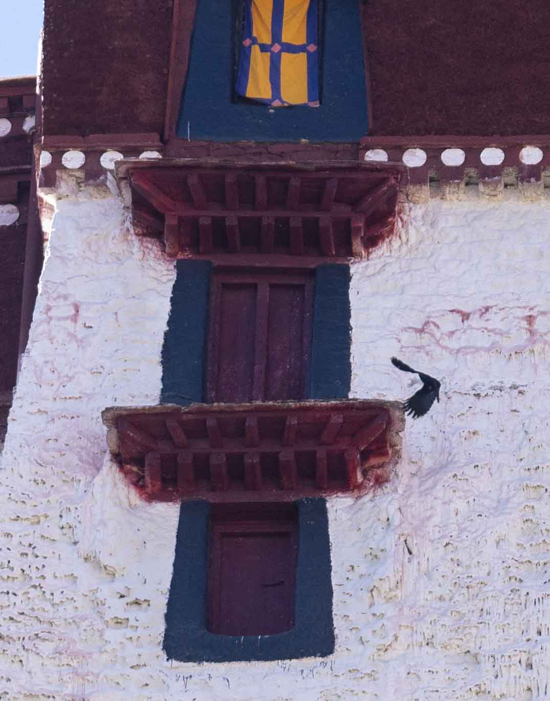
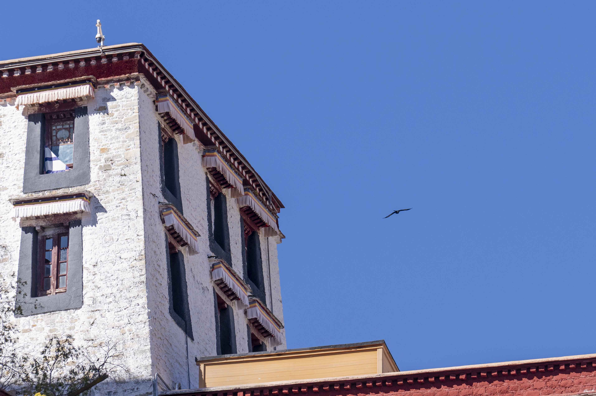
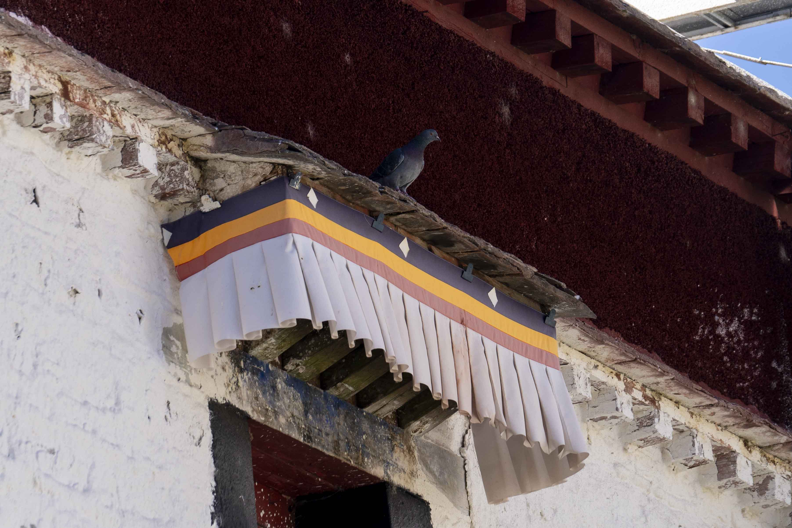

布达拉宫还是得的，毕竟+1 外交政策槽位。今日闭馆，没法进去参观，便在外面绕了一圈表示敬意。沿着转了一圈，建立在山上高低错落，很不竖直。有位身着白色藏服（批一肩）的老人家，一米多长的头发盘在头上，杵着拐杖，步履坚定地绕寺而行。旁边磕长头信徒；时不时有小鸟从布达拉宫房檐下飞进飞出，祥和自然；而这一切在旁边购物节大声音乐中都被打破了，商业是不是会让宗教丧失神性？我不知道。

大昭寺遇到个打扫卫生的大爷，正欲耐心等待他完成，没想到他说这条通道游客不走。众生平等，有些人肯定是要更平等的。排队拜佛，没想到有的信徒那么着急啊，倒是带孩子的守规矩很多。看到个僧侣拿着麻袋收集信徒放着的功德钱；有名的佛门庭若市，没名气的寥寥几人；很难评啊很难评。往好了说，见识了信仰的力量，也加了一勺油增添些功德。不小心说了一句对12岁释迦牟尼等身像不敬的话，特绕寺一圈聊表罪过，宗教信仰还是要尊重啊。
最后和远哥吃了一家传统藏餐，纯碳水，吃了binini还有藏面，口味还行。吃着吃着有人进来要钱，好家伙，关键是人家还真给！要钱老哥明显跳过了游客，不找外地人要，感觉有些奇妙？还有进来卖卫生纸的阿婆。佛教劝人向善，没想到是这样一般地布施哈。




